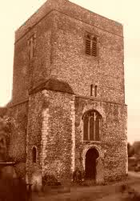
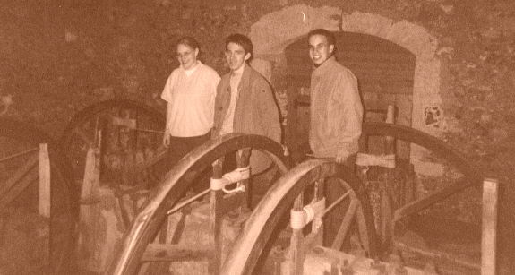

Ss. Peter & Paul, Borden
Details of the Bells
| Treble | 6 cwt | Eb | 1802 | Thomas Mears I |
| 2 | 6½ cwt | D | 1802 | Thomas Mears I |
| 3 | 7½ cwt | C | 1802 | Thomas Mears I |
| 4 | 8¾ cwt | Bb | 1802 | Thomas Mears I |
| 5 | 10½ cwt | Ab | 1802 | Thomas Mears I |
| 6 | 12 cwt | G | 1802 | Thomas Mears I |
| 7 | 15 cwt | F | 1802 | Thomas Mears I |
| Tenor | 21 cwt | Eb | 1802 | Thomas Mears I |
PART OF A FAILED PEAL OF MINOR TO MARK THE BICENTENARY OF THE FIRST PEAL BY THE LEEDS YOUTHS
GRANDSIRE TRIPLES, RUNG PRIOR TO A WEDDING IN 2002

Ringing Times
|
Monday: |
8:00 - 9:00pm following Evensong |
| Sundays: | Christmas & Easter Day only |
| Chiming: | Sunday with Ellacombe |
Captain: A. Harwood Esq.
Steeplekeeper: C.J. Cooper Esq.
Tower History
| Early 1600's | John Wilnar cast a heavy ring of six for the tower. His foundry was located in the village. It is to be supposed that this six were hung in a frame at the level of the present ringing room, the bells being rung from the ground floor. Reason for supposing this are the four large beams on the ringing room floor which look very much like foundation beams and the belfry stairs only go to the height of the present ringing room; there being a ladder up to the belfry. | |
| 1802 | All eight recast by Thomas Mears I. | |
| 1886 | All eight rehung on new bearings by Samuel Snelling. The front 5 were quarter turned, and some new headstock straps added. The back 3 were not quarter turned. The tenor and 7th had extended crown staples bolted over the top of the original cast-in staples. This means that these two bells are impossible to "get up right". | |
|
||
| 2000 | The ASELY provided advice on the maintenance of the installation, and became responsible for this and providing ringers to assist the local company. | |
| 2001 | Members of the ASELY inspected the bells closely and found many of the bolts securing the gudgeon plates to the headstocks had begun to tear further through the headstocks. This is in part due to some over-zealous tightening of those bolts several years ago by a ringer from a neighbouring parish who had bypassed the tower captain and gone straight through the church authorities. Sadly, this work which was supposedly necessary to make the bells safe to ring has in fact worsened their state. An expert in mechanics advised the ASELY that metal plates must be fitted between the nuts and the tops of the headstocks. The ASELY placed an order for these through the tower captain, and resolved that this work must be carried out, and at the same time painting of all the metalwork, tightening of all bolts securing frame to foundation beams, and restoration of Ellacombe chime hammers, and new terylene ropes for the Ellacombe mechanism. This work to be completed in preparation for the Bicenteary of the bells in 2002. | |
| Aug 2001 | The Ellacombe hammers were cleaned and replaced on the bells excepting the third of which part of the hammer is missing. Ellacombe rope was attached to the hammers and fed through the rollers into the old chime box which has been replaced on the wall. The bells can now be chimed for Sunday Service. | |
| 2002 | January; the ASELY carried out further maintenance. A metal plate was fixed between the securing bolt of the gudgeon plate and the headstock on the third to eliminate movement which had caused a terrible banging sound to be heard and a great shaking of the frame to be seen when the bell was turned over (the bell had never been hitting the frame as suggested by some, who had never bothered to investigate properly!) Boards were also fixed up the side of the frame on the 3rd and Tenor to guide the ropes straight down to the ringing room (whereas the ropes had previously fallen slower than the wheels had turned which led to a snaking and jumping effect on the ropes) Adding the guides also meant that the Tenor sally could be moved up to a height whereby it was easier to ring. Six extents of Minor were rung (without too great an effort being required) on the back 6 on February 2nd (an unsuccessful peal attempt) to mark the Bicentenary of the casting of the bells and the centenary of a peal marking (what was then) the centenary of the casting. | |
|  Members of RM &DG among the bells 2002.  Band who attempted the Bicentenary peal of Bob Major on the bells in Feb 2003 |